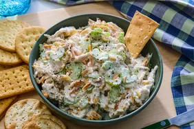

Chicken Salad Recipes
Home

Chicken Salad
Homemade chicken salad is quick and easy to make with just a handful of everyday ingredients, and is perfect for warm weather picnics, potlucks, lunches, or light dinners
Ingredients
- Chicken
- Mayonnaise
- Celery
- Almond
Steps
- Gather all ingredients
- Place almonds in a frying pan
- Mix together mayonnaise, lemon juice, and pepper in a medium bowl.
- Toss with chicken, toasted almonds, and celery.
- Enjoy!